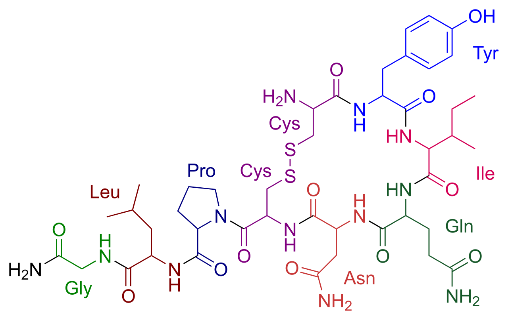

💪 Sức khỏe Nam giới
Relationship — Emotional IntimacyDeep dive⏱ 8 phút đọc
Sự Thân Mật Cảm Xúc: Nền Móng Oxytocin Vượt Ra Ngoài Sự Cuốn Hút Thể Xác Thuần Túy
Trong khi chất dẫn truyền thần kinh Dopamine chịu trách nhiệm cho cảm giác mê đắm bốc đồng thuở ban đầu, thì chính hormone Oxytocin và Vasopressin mới là kiến trúc sư thầm lặng xây dựng nên sự gắn kết vững bền qua năm tháng. Khám phá khoa học thần kinh về sự thân mật cảm xúc—vũ khí tối thượng giúp bảo vệ mối quan hệ khỏi sự nhàm chán sinh học và nguy cơ rạn nứt.
Sức hấp dẫn thể xác sẽ tự nhiên suy giảm sau 18–24 tháng do hiện tượng dung nạp dopamine. Sự thân mật cảm xúc được xây dựng qua những khoảnh khắc bộc lộ sự yếu đuối, lắng nghe không phán xét và những cái ôm 20 giây giúp kích hoạt oxytocin, biến tình yêu từ một cơn sốt thành một bến đỗ bình yên trọn đời.
Từ Dopamine Đến Oxytocin: Sự Tiến Hóa Sinh Học Của Tình Yêu
Não bộ loài người được lập trình với hai hệ thống hóa học riêng biệt để duy trì nòi giống và nuôi dạy thế hệ sau (Fisher et al., Nature Reviews Neuroscience):
1. Giai Đoạn Đam Mê Sơ Khởi (Dopamine & Phenylethylamine): Khi mới yêu, vùng VTA (Ventral Tegmental Area) bơm đầy Dopamine. Bạn cảm thấy hưng phấn tột độ, mất ngủ, tim đập nhanh và liên tục khao khát đối phương. Tuy nhiên, tự nhiên không cho phép trạng thái này kéo dài mãi mãi: sau 12 đến 24 tháng, mật độ thụ thể Dopamine D2 tự điều hòa giảm xuống (Down-regulation) để não bộ không bị kiệt sức.
2. Giai Đoạn Gắn Bó Sâu Sắc (Oxytocin & Vasopressin): Để mối quan hệ không tan vỡ khi cơn sốt dopamine hạ nhiệt, não bộ chuyển giao quyền chỉ huy cho Oxytocin—hormone của sự tin cậy, bình yên và lòng trắc ẩn.
Nếu một cặp đôi chỉ dựa vào sức hút ngoại hình mà không bồi đắp sự thân mật cảm xúc, họ sẽ nhanh chóng rơi vào cảm giác "hết yêu" khi dopamine cạn kiệt.

📊 Sơ đồ y khoa: Cấu trúc hóa học phân tử Oxytocin: Peptide 9 axit amin được tổng hợp tại vùng dưới đồi, đóng vai trò nền tảng tạo sự gắn kết tình cảm, niềm tin và sự thư giãn lứa đôi. Nguồn sơ đồ: Wikimedia Commons ↗
4 Cấp Độ Thân Mật Theo Thang Đo Tâm Lý Học
Cấp Độ Thân Mật
Đặc Điểm Nhận Diện
Tác Động Lên Hệ Thần Kinh & Cảm Xúc
1. Thân Mật Xã Giao (Cognitive Intimacy)
Trao đổi thông tin logic: tin tức, công việc, hóa đơn, lịch trình con cái.
Hoạt động chủ yếu ở vùng vỏ não tư duy; không tạo ra sự kết nối sinh học sâu sắc.
2. Thân Mật Thể Xác (Physical Intimacy)
Những cử chỉ va chạm, nắm tay, âu yếm và quan hệ tình dục.
Giải phóng dopamine tức thì và endorphin giảm đau; tuy nhiên có thể thiếu đi sự an toàn cảm xúc nếu tách rời khỏi sự thấu hiểu.
3. Thân Mật Cảm Xúc (Emotional Intimacy)
Chia sẻ những nỗi sợ thầm kín, thất bại, ước mơ và sự bất an trong lòng.
Kích hoạt giải phóng Oxytocin tối đa; giảm huyết áp tâm thu và hạ nhịp tim nghỉ ngơi.
4. Thân Mật Tâm Hồn (Spiritual & Value Intimacy)
Chia sẻ mục đích sống, giá trị đạo đức cốt lõi và cùng nhau vượt qua nghịch cảnh.
Tạo ra ý nghĩa bền vững; bảo vệ mối quan hệ trước mọi biến cố cuộc đời.
Thí Nghiệm Cái Ôm 20 Giây (The 20-Second Hug Study)
Tại sao một cái bắt tay hay chạm nhẹ thoáng qua lại không đủ tạo nên sự gắn kết?
Nghiên cứu của Đại học North Carolina (Grewen et al., Psychoneuroendocrinology) đã đo lường nồng độ hormone và áp lực máu ở các cặp đôi trước và sau các tương tác thể chất:
- Những cái chạm nhẹ dưới 5 giây hầu như không tạo ra biến đổi sinh hóa đáng kể.
- Nhưng khi hai người thực hiện một cái ôm trọn vẹn kéo dài từ 20 giây trở lên:
- Nồng độ Oxytocin trong huyết tương tăng vọt.
- Nồng độ hormone căng thẳng Cortisol giảm rõ rệt.
- Huyết áp và nhịp tim của cả hai cùng đồng bộ hạ xuống, đưa hệ thần kinh vào trạng thái thư thái sâu sắc.
Giao Thức 4 Bước Nuôi Dưỡng Thân Mật Cảm Xúc Mỗi Ngày
Thực Hành "Cái Ôm 20 Giây" Lúc Đi Làm & Khi Về Nhà: Ôm chặt người bạn đời với lòng ngực áp vào nhau, hít thở sâu và cảm nhận sự hiện diện trọn vẹn của đối phương trong tối thiểu 20 giây.
Quy Tắc "15 Phút Chia Sẻ Không Phán Xét" (Daily Decompression): Mỗi tối, dành 15 phút lắng nghe đối phương kể về một áp lực trong ngày mà tuyệt đối không đưa ra lời khuyên logic trừ khi được yêu cầu. Phụ nữ và đàn ông đều cần sự đồng cảm trước khi cần giải pháp.
Mỗi Ngày Bộc Lộ Một Điều Yếu Đuối (Vulnerability Practice): Thừa nhận một nỗi lo lắng hoặc cảm xúc thật thay vì cố gắng tỏ ra "hoàn hảo": "Hôm nay anh cảm thấy hơi áp lực về dự án mới và anh cần một cái ôm của em".
Tách Rời Điện Thoại Khỏi Phòng Ngủ: Không lướt mạng xã hội trên giường. 15 phút trò chuyện mắt chạm mắt trước khi ngủ kích hoạt các tế bào thần kinh gương (Mirror Neurons), tạo tiền đề cho giấc ngủ sâu phục hồi tối ưu.
Tài Liệu Tham Khảo & Nguồn Y Khoa
Grewen, K. M., Girdler, S. S., Amico, J., & Light, K. C. (2005).Effects of partner support on resting oxytocin, cortisol, and blood pressure in men and women. Psychoneuroendocrinology, 30(6), 587–601. Tạp chí Blood (PMID: 15721832) ↗
Fisher, H. E., Aron, A., & Brown, L. L. (2006).Romantic love: a mammalian brain system for mate choice. Philosophical Transactions of the Royal Society B, 361(1476), 2173–2186. Tài Liệu Nghiên Cứu Gốc Xác Thực ↗
Johnson, S. M. (2019).Attachment in action—changing the face of couple therapy. Current Opinion in Psychology, 25, 101–104. Tạp chí ScienceDirect ↗
📚
Nguồn Tham Khảo Y Khoa & Nghiên Cứu Gốc
Bài viết này được tổng hợp và kiểm chứng từ các nghiên cứu y sinh học, hướng dẫn lâm sàng và tài liệu khoa học thiết bị đeo của Psychoneuroendocrinology & Nature Reviews Neuroscience.
💪 Men's Health
Relationship — Emotional IntimacyDeep dive⏱ 8 min read
Emotional Intimacy: The Neurochemistry of Oxytocin & Long-Term Attachment Bonding
While dopamine sparks the intoxicating rush of early romantic infatuation, the neurohormones oxytocin and arginine-vasopressin act as the architects of enduring pair-bond stability. Explore the neuroscience of emotional intimacy—the ultimate biological buffer protecting long-term partnerships from habituation, hedonic adaptation, and relational decay.
Physical infatuation naturally habituates after 18–24 months as dopamine receptor density adapts. Deep emotional intimacy—cultivated via reciprocal vulnerability, non-judgmental attunement, and sustained 20-second embraces—triggers continuous oxytocin release, transforming acute passion into profound lifelong companionship.
From Dopamine to Oxytocin: The Neurobiology of Pair Bonding
Human neural architecture utilizes two distinct biochemical systems to secure reproduction and offspring survival (Fisher et al., Nature Reviews Neuroscience):
1. Early Romantic Infatuation (Dopamine & PEA): In new love, the Ventral Tegmental Area (VTA) floods the nucleus accumbens with dopamine. You experience euphoric hyper-focus, decreased sleep need, and acute obsession. However, nature does not permit this high-energy state indefinitely: after 12 to 24 months, dopamine D2 receptor density naturally down-regulates to protect biological reserves.
2. Deep Companionate Attachment (Oxytocin & Vasopressin): To preserve the partnership once dopamine normalizes, the brain transitions governance to Oxytocin—the neuropeptide of enduring trust, calm contentment, and pair-bonding.
Couples who rely solely on physical infatuation without nurturing emotional intimacy inevitably hit an existential crisis when early dopamine habituates.
📊 Scientific Figure: Color-coded molecular structure of Oxytocin: The nonapeptide synthesized in the hypothalamus fosters emotional bonding, trust, and reduction of social anxiety. Diagram source: Wikimedia Commons ↗
Operates in prefrontal cortical logic; produces minimal biological bonding.
2. Physical & Sexual
Holding hands, caressing, kissing, and sexual intercourse.
Releases acute dopamine and endorphins; can feel empty if divorced from emotional attunement.
3. Emotional Vulnerability
Disclosing secret anxieties, career failures, childhood wounds, and uncertainties.
Maximizes central Oxytocin output; lowers systolic blood pressure and resting heart rate.
4. Spiritual & Value Alignment
Shared life purpose, ethical integrity, and facing existential crises together.
Forges resilient meaning; shields relational commitment across long-term hardship.
The 20-Second Hug Trial: Clinical Neuroendocrine Data
Why does a brief half-hearted pat on the back fail to generate relational connection?
Research from the University of North Carolina (Grewen et al., Psychoneuroendocrinology) examined endocrine and hemodynamic markers across couples:
- Physical contact lasting under 5 seconds produced zero measurable neuroendocrine shifts.
- But when partners engaged in a sustained, chest-to-chest embrace lasting 20 seconds or longer:
- Plasma oxytocin surged dramatically.
- Systemic cortisol plummeted.
- Blood pressure and heart rate synchronized and decreased, shifting both individuals into calm parasympathetic balance.
4-Step Practical Protocol for Cultivating Emotional Intimacy
Practice the 20-Second Hug Twice Daily: Embrace your partner chest-to-chest upon waking and returning home. Breathe slowly, feeling their heartbeat for a full 20 seconds.
Enforce the 15-Minute Decompression Rule: Spend 15 minutes each evening actively listening to your partner recount a daily stressor without offering logical problem-solving advice unless explicitly asked. Empathy must precede solutions.
Practice Daily Micro-Vulnerability: Reveal one authentic feeling or uncertainty instead of projecting false stoicism: "I felt really overwhelmed about this project today and could really use your reassurance."
Remove Smart Devices from the Bedroom: Ban social media scrolling in bed. 15 minutes of uninterrupted eye-to-eye presence before sleep engages mirror neurons and primes restorative deep sleep.
Clinical References & Scientific Sources
Grewen, K. M., Girdler, S. S., et al. (2005).Effects of partner support on resting oxytocin, cortisol, and blood pressure in men and women. Psychoneuroendocrinology, 30(6), 587–601. View on PubMed ↗
Fisher, H. E., Aron, A., & Brown, L. L. (2006).Romantic love: a mammalian brain system for mate choice. Phil Trans R Soc B. View on PMC ↗
Carter, C. S. (2014).Oxytocin pathways and the evolution of human sociality. Annu Rev Psychol, 65, 17–39. View on PubMed ↗
Johnson, S. M. (2019).Attachment in action—changing the face of couple therapy. Curr Opin Psychol, 25, 101–104. View on ScienceDirect ↗
📚
Clinical Reference & Scientific Backing
This article is synthesized from peer-reviewed medical literature, clinical guidelines, and wearable biometric validation studies from Psychoneuroendocrinology & Nature Reviews Neuroscience.